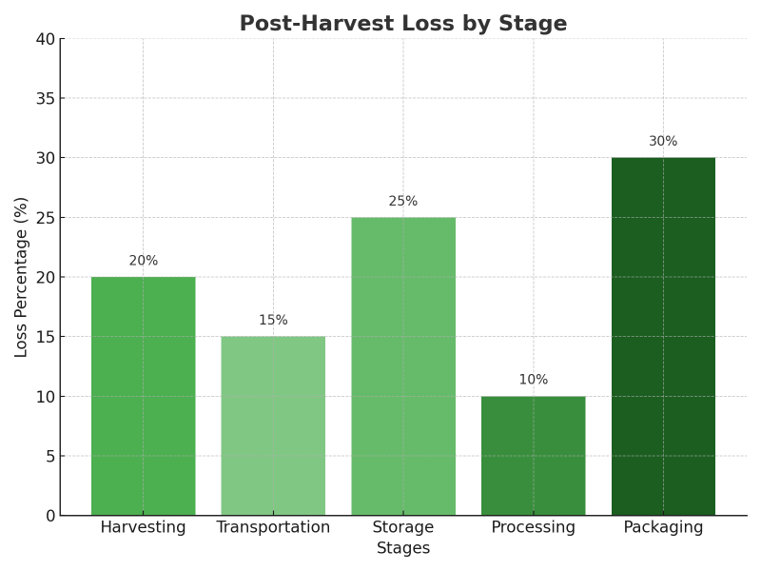
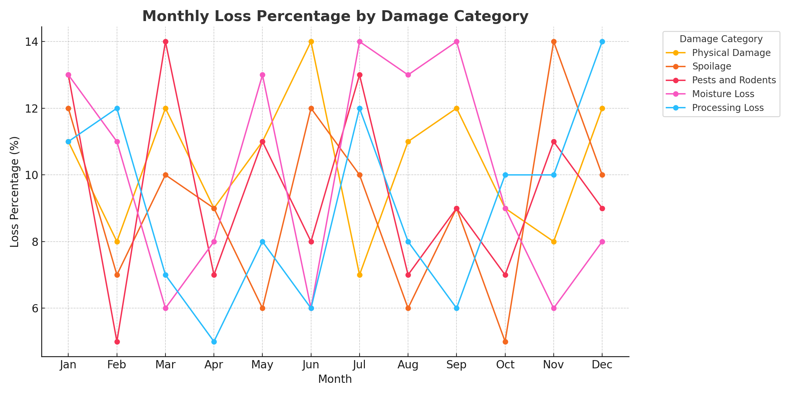

Analysis of Loss Causes
- Physical Damage: Caused during harvesting, handling, or transportation.
- Spoilage: Due to poor storage conditions or delays.
- Pests and Rodents: Infestation during storage.
- Moisture Loss: Inadequate drying or storage practices.
- Processing Loss: Inefficiencies in the processing stage.
Charts & Visuals

Post-Harvest Loss by Phases
Statistics
Monthly Loss Percentage:
Analysis Table
| Damage Category | Description | Loss Percentage (%) |
|---|---|---|
| Physical Damage | Caused during harvesting, handling, or transportation | 20% |
| Spoilage | Poor storage conditions or delays | 15% |
| Pests and Rodents | Infestation during storage | 25% |
| Moisture Loss | Inadequate drying or storage practices | 10% |
| Processing Loss | Inefficiencies in the processing stage | 30% |